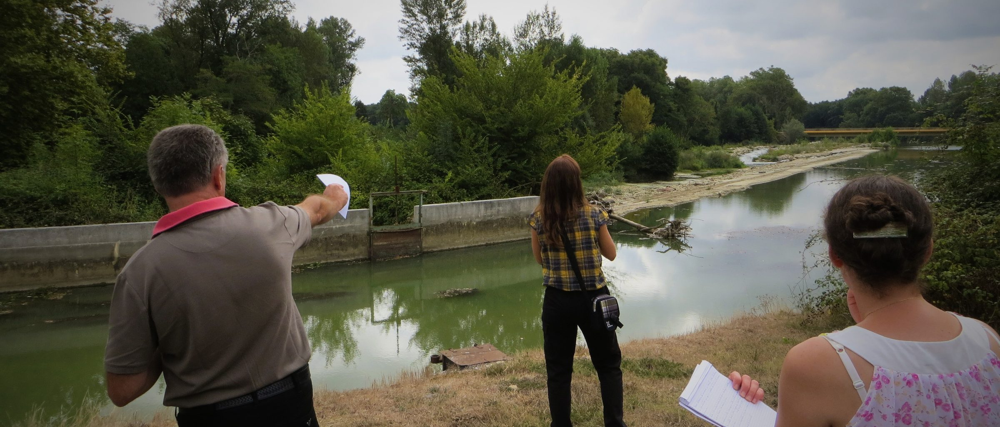

Domaines couverts

Eau

Biodiversité

Urbanisme

Agriculture

Climat


Vous rêvez de contribuer aux enjeux environnementaux ? Vous envisagez le secteur public mais ne savez pas par où commencer ? Vous avez des questions sur les postes, les secteurs, les formations ? Nous vous accompagnons pas à pas.
Un accompagnement adapté à votre profil, vos envies et vos contraintes
Dans un espace sans jugement, avec quelqu'un qui connaît le terrain
Des conseils concrets basés sur 10 ans d'expérience dans les collectivités
En 5 minutes, un questionnaire anonyme pour comprendre votre profil et vos ambitions
Faire le questionnaire